Releasenotes eBlinqx Hypotheekadvies – Februari 2025
Onderstaande updates hebben wij in de maand februari doorgevoerd:
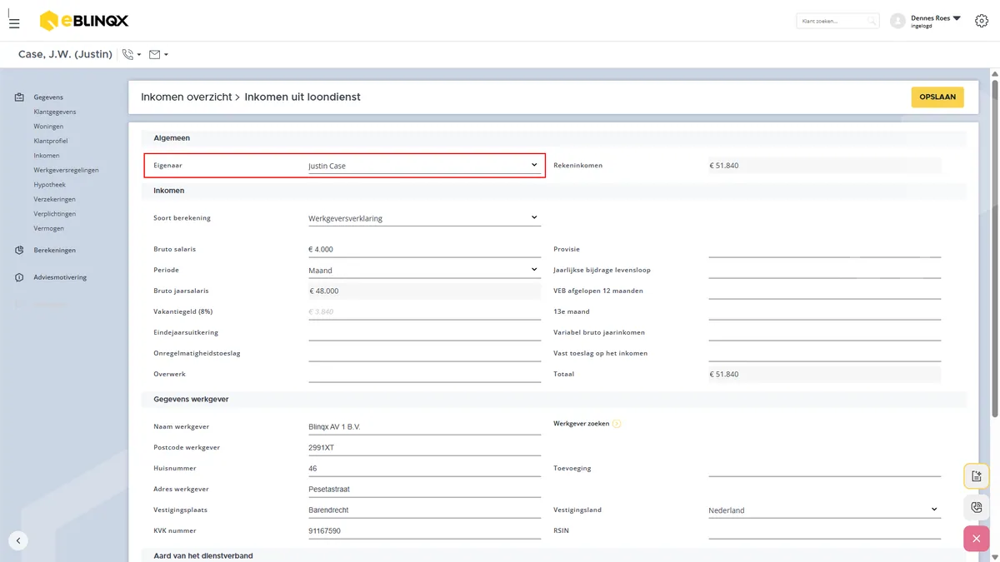
IT-20889: Vooringevulde eigenaar bij nieuw inkomen en werkgeversregeling
Bij het inventariseren van inkomen en werkgeversregelingen wordt de eigenaar nu automatisch vooringevuld op basis van de geselecteerde persoon. De mogelijkheid om de eigenaar handmatig te wijzigen blijft behouden. Deze verbetering versnelt het invullen van inkomensgegevens.
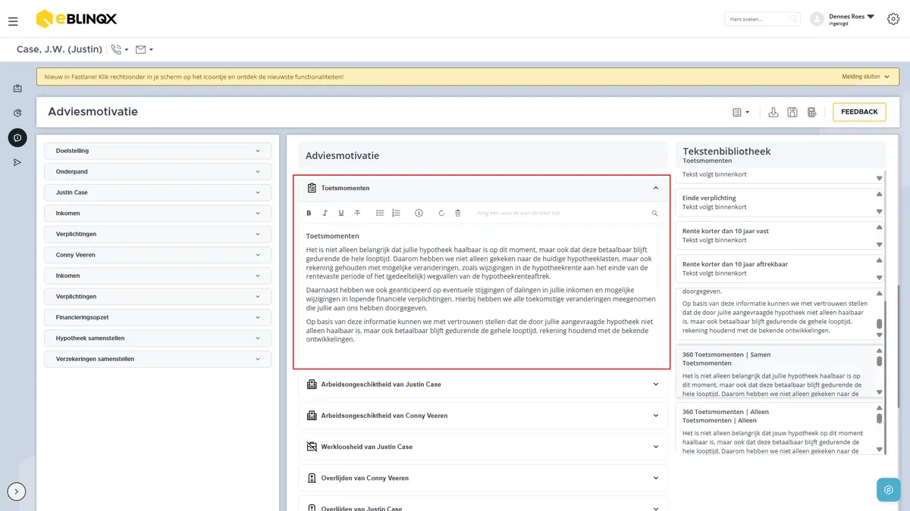
IT-23150: Adviesmotivering ‘Toetsmomenten’ wordt nu correct opgeslagen
Tekstblokken onder het kopje ‘Toetsmomenten’ werden niet correct opgeslagen en teruggezet naar de oude tekst. Dit probleem is nu verholpen, zodat alle wijzigingen correct bewaard blijven.
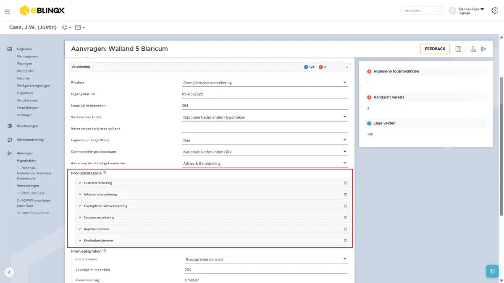
IT-24434: Verbetering HDN-LX-formulier: automatisch inklappen hoofdrubrieken
Het LX-formulier wordt, voor een aantal aanbieders, nu standaard ingeklapt voor de hoofdrubrieken: Inkomensverzekering, Kapitaalopbouw, Kredietbeschermer, Lastenverzekering, Overlijdensrisicoverzekering en Uitvaartverzekering. Daarnaast worden bij het aanvragen van een specifieke verzekering automatisch de relevante secties opengeklapt, samen met het algemene vak ‘Verzekering’. Deze aanpassing zorgt voor een overzichtelijker formulier en een efficiënter aanvraagproces.
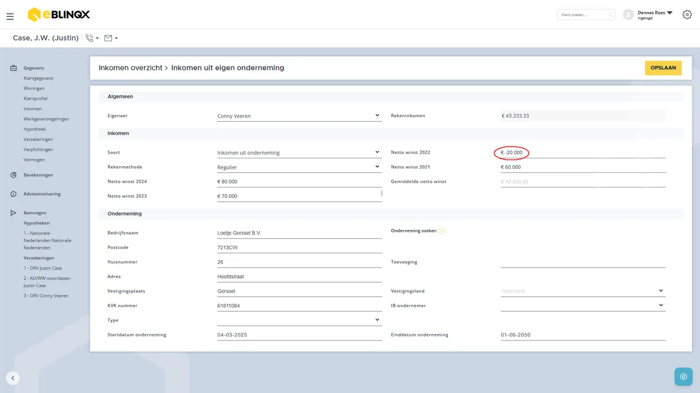
IT-24563: Mogelijkheid om negatief inkomen (verlies) uit onderneming toe te voegen
Het is nu mogelijk om een negatief inkomen (verlies) uit onderneming toe te voegen in de database van eBlinqx Hypotheekadvies. Dit biedt een nauwkeuriger financieel overzicht voor ondernemers. Zorgt voor een realistische weergave van de financiële situatie bij hypotheek- en kredietaanvragen en ondersteunt betere en completere advisering. Deze verbetering maakt eBlinqx Hypotheekadvies flexibeler en beter afgestemd op de praktijk.
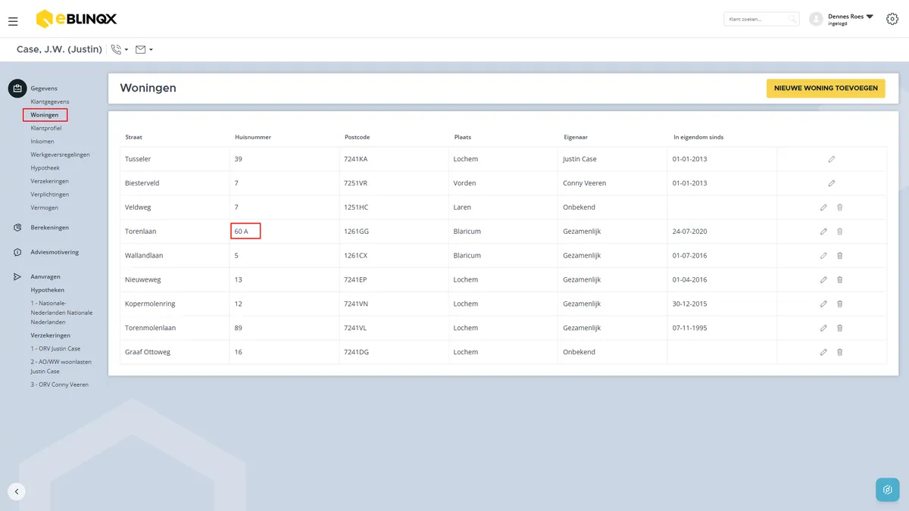
IT-23301: Huisnummer toevoeging nu zichtbaar in overzichtsscherm 'Woningen'
In het overzichtsscherm 'Woningen'werd de huisnummer toevoeging niet weergegeven, waardoor adressen onvolledig leken. Dit is nu opgelost: huisnummers met toevoegingen (bijv. 60A) worden correct getoond.
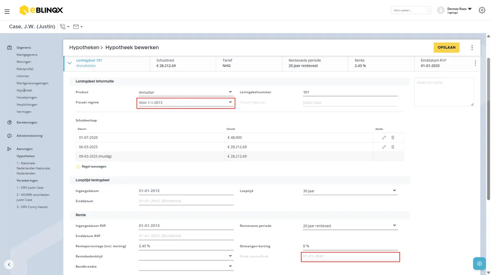
IT-24080: Aanpassing hypotheekrente-aftrek op basis van aflosvorm en fiscaal regime
De logica voor hypotheekrente-aftrek is aangepast om correct te bepalen of en hoe lang renteaftrek mogelijk is, gebaseerd op de combinatie van aflosvorm en fiscaal regime.
Hypotheekrente-aftrek is mogelijk bij Annuïteiten, Lineair en SVn Starterslening:
- Vanaf 1-1-2013: maximaal 30 jaar aftrekbaar.
- Voor 1-1-2013: aftrek kan langer dan 30 jaar duren.
Geen renteaftrek mogelijk bij overige aflosvormen: Aflossingsvrij, Banksparen, Beleggers, Combinatielening, Leven, Spaar en Verzilveren als het fiscaal regime ‘Vanaf 1-1-2013’ is.
Aftrekbaar wordt automatisch 0 maanden en is niet aanpasbaar.
Automatische prefill einddatum renteaftrek in PS:
- Bij maximaal 30 jaar aftrek: einddatum wordt automatisch berekend op basis van de ingangsdatum.
- Geen renteaftrek: einddatum wordt gelijk aan de ingangsdatum en is niet aanpasbaar.
Deze wijziging voorkomt fouten en zorgt voor een correcte en efficiënte verwerking van hypotheekrente-aftrek in eBlinqx Hypotheekadvies.
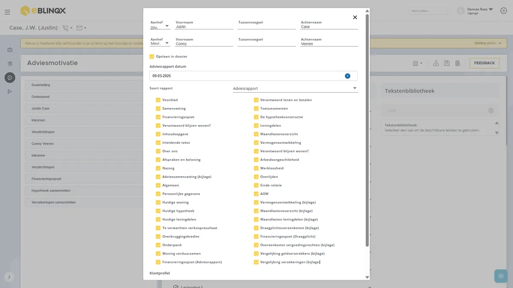
IT-24368: Aangepaste volgorde van adviesrapport en adviesmotivatieblokken
De volgorde van het adviesrapport en de adviesmotivatieblokken is aangepast voor een logischer en gebruiksvriendelijker proces. De informatie wordt nu in een logische volgorde gepresenteerd, wat de leesbaarheid verbetert. Adviseurs kunnen sneller navigeren en relevante informatie makkelijker terugvinden en de motivatieblokken sluiten nu beter aan op het adviesrapport, waardoor de samenhang in het dossier sterker is.
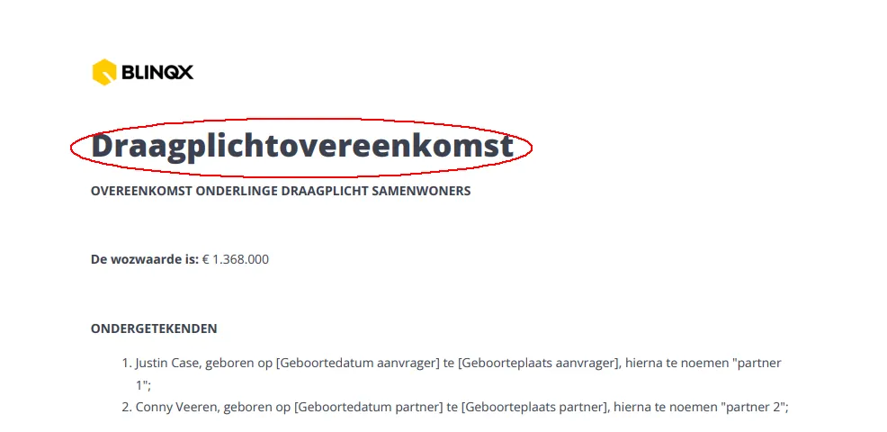
IT-24559: Titels toegevoegd aan adviesrapport
We hebben nu ook titels toegevoegd aan de volgende onderdelen van het adviesrapport: Adviessamenvatting, Draagplichtovereenkomst en Overeenkomst vergoedingsrechten. Hierdoor wordt de structuur van het rapport overzichtelijker, vinden de adviseurs en klanten informatie makkelijker terug en worden alle rubrieken zijn nu uniform benoemd. Deze aanpassing draagt bij aan een professioneler en beter gestructureerd adviesrapport.
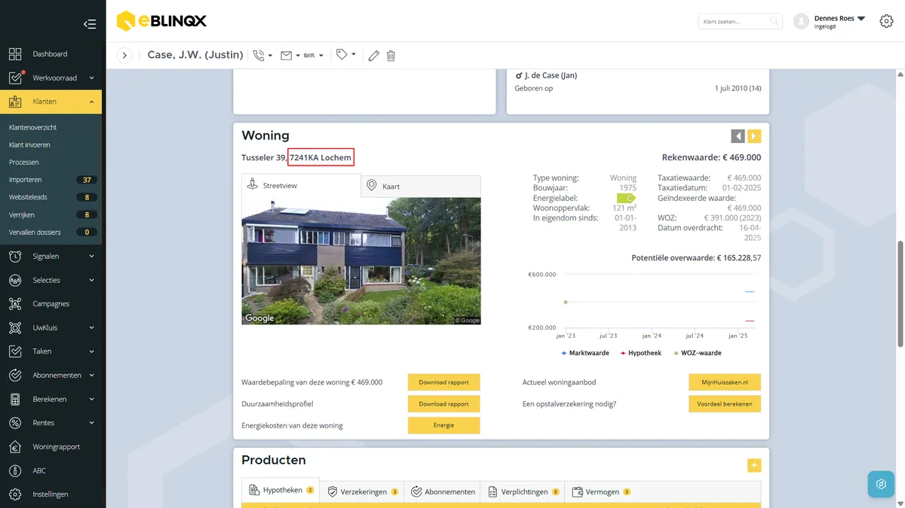
IT- 23086: Postcode en woonplaats toegevoegd bij huidige woning
Bij het adres van de huidige woning worden nu ook de postcode en woonplaats getoond. Hierdoor is er nu een volledige adresweergave voor meer duidelijkheid, snellere herkenning van de juiste woninggegevens en verbeterde consistentie met andere adresvelden in het systeem. Deze wijziging zorgt voor een completer en overzichtelijker adresoverzicht.
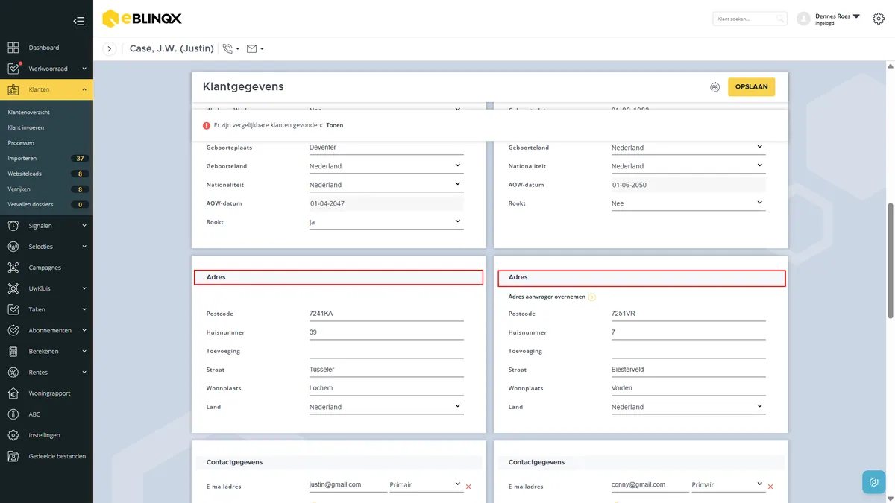
IT-23242: Terminologie-update: ‘Correspondentieadres’ gewijzigd naar ‘Adres’
De term ‘Correspondentieadres’ is vervangen door ‘Adres’ om de benaming duidelijker en breder toepasbaar te maken. De voordelen hiervan zijn: Eenvoudiger en duidelijker taalgebruik, voorkomt verwarring over het type adres dat wordt ingevuld en is beter in lijn met andere adresvelden binnen het systeem. Deze wijziging draagt bij aan een gebruiksvriendelijkere en consistente interface.
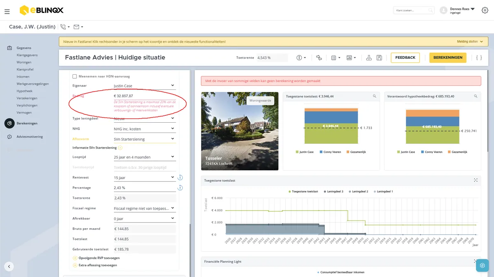
IT-24351: Correctie berekening SVn Starterslening
De berekening voor de SVn Starterslening is aangepast. Voorheen werd alleen 20% van de koopsom of aanneemsom meegenomen, maar dit is nu gecorrigeerd naar 20% van de koopsom + eventuele verbeter- of meerwerkkosten. De voordelen hiervan zijn: Nauwkeurigere berekening volgens de algemene SVn-voorwaarden, correcte weergave in het adviesrapport en consistente verwerking in alle startersleningaanvragen. Deze wijziging zorgt ervoor dat het adviesrapport en de berekeningen volledig aansluiten op de juiste voorwaarden.
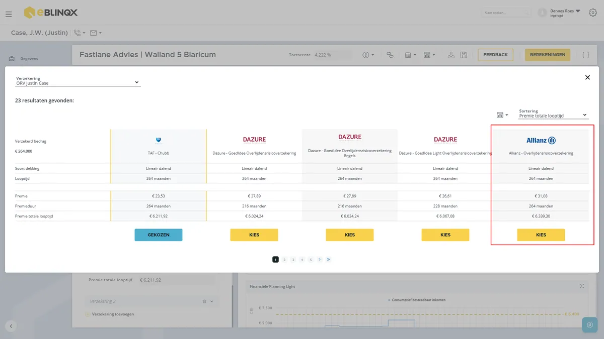
IT-24184: Allianz ORV weer beschikbaar in vergelijkingsoverzicht
De overlijdensrisicoverzekeringen (ORV) van Allianz zijn terug in het overzicht van aanbieders bij het vergelijken van ORV’s. Voorheen werden de premies niet ingelezen, wat het adviseren bemoeilijkte. Dit probleem is nu verholpen. De voordelen hiervan zijn: Vollediger aanbod: Allianz-producten zijn weer beschikbaar in de vergelijking, betere advisering: Completere keuze voor klanten en nauwkeurigere berekeningen: Allianz-premies worden weer correct ingelezen. Kortom: Deze wijziging zorgt voor een vollediger en betrouwbaarder ORV-vergelijkingsoverzicht.
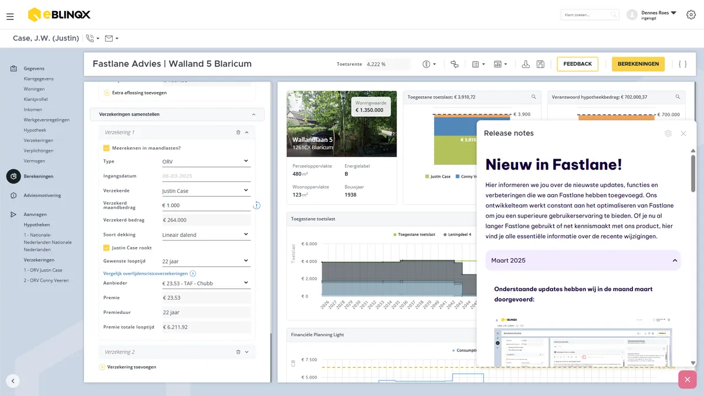
IT-15916: Releasenotes nu zichtbaar via een pop-up in eBlinqx Hypotheekadvies
Om gebruikers beter op de hoogte te houden van wijzigingen na updates, tonen we releasenotes nu via een iframe pop-up in eBlinqx Hypotheekadvies. De voordelen hiervan zijn: Direct inzicht in updates na een release, voorkomt verrassingen door gewijzigde functionaliteiten en verbeterde communicatie over nieuwe en aangepaste functies. Kortom: Dankzij deze wijziging blijven gebruikers beter geïnformeerd over updates en verbeteringen in eBlinqx Hypotheekadvies.
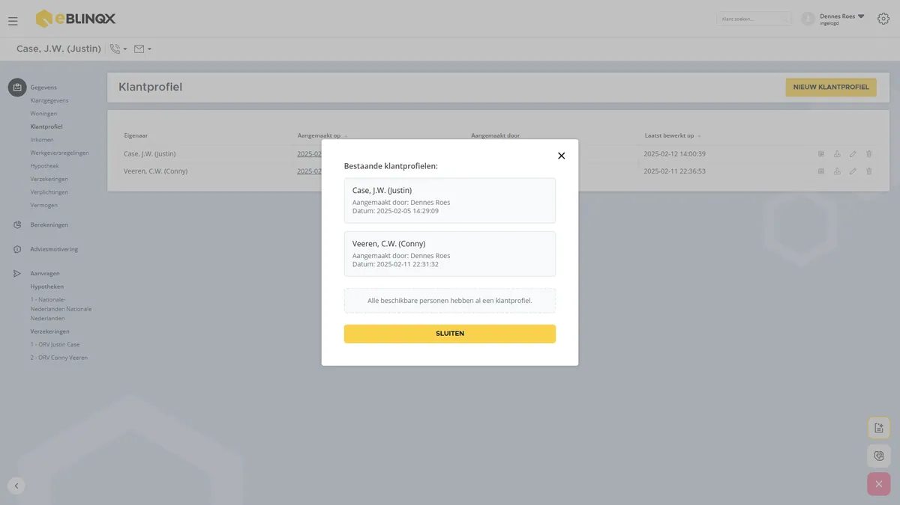
IT-24233: Maximaal 1 klantprofiel per persoon
Het is nu niet langer mogelijk om meerdere klantprofielen per persoon aan te maken. Er kan maximaal één klantprofiel per persoon worden aangemaakt om duplicaten te voorkomen en de gegevensconsistentie te verbeteren. Dit voorkomt dubbele klantprofielen, geeft betere overzichtelijkheid en gegevenskwaliteit en zorgt voor een efficiënter beheer van klantinformatie. Deze wijziging zorgt voor een nauwkeurigere en overzichtelijkere klantadministratie.
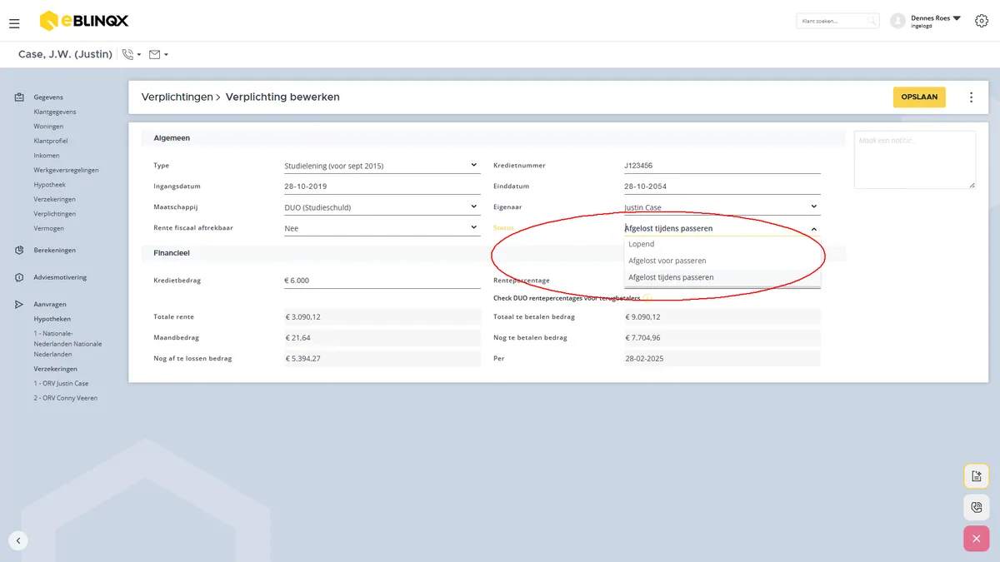
IT- 24356: Status bij verplichtingen
Het veld ‘Afgelost voor passeren’ in het hoofdstuk ‘Verplichtingen’ is hernoemd naar ‘Status’ en bevat nu een keuzemenu met drie opties:
- Lopend – Werkt zoals voorheen wanneer ‘Afgelost voor passeren’ op Nee stond.
- Afgelost voor passeren – Werkt zoals voorheen wanneer ‘Afgelost voor passeren’ op Ja stond.
- Afgelost tijdens passeren – Werkt als ‘Afgelost voor passeren’ Ja, maar vult daarnaast automatisch het nog af te lossen bedrag in de financieringsopzet in bij ‘Consumptief’.
De voordelen hiervan zijn: Duidelijkere terminologie voor adviseurs, meer flexibiliteit in de status van verplichtingen en de automatische verwerking van het nog af te lossen bedrag bij aflossing tijdens passeren.
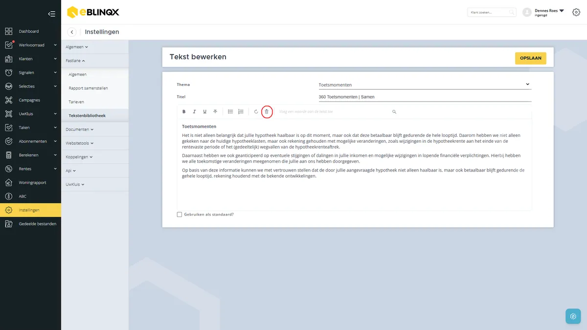
IT-24439: Mogelijkheid om teksten uit de tekstenbibliotheek te verwijderen
Adviseurs kunnen nu teksten permanent verwijderen uit de tekstenbibliotheek. Voorheen was het alleen mogelijk om teksten te wijzigen of archiveren, maar nu is er een prullenbakicoon toegevoegd waarmee ongewenste teksten direct kunnen worden verwijderd. De voordelen hiervan zijn: Meer controle over de tekstenbibliotheek, het opruimen van overbodige teksten voor een overzichtelijker beheer en een eenvoudige en snelle verwijderoptie via het prullenbakicoon. Deze verbetering zorgt voor een efficiëntere en gebruiksvriendelijkere tekstenbibliotheek.
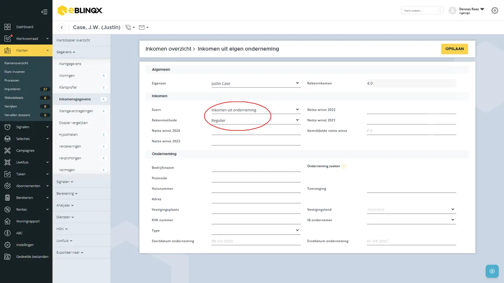
IT-24359: Prefill functionaliteit toegevoegd bij ‘Inkomen uit onderneming’
Bij het hoofdstuk ‘Inkomen’ in de rubriek ‘Inkomen uit onderneming’ worden nu meerdere velden automatisch ingevuld om het invoerproces te versnellen en te verbeteren.
- Soort berekening wordt standaard ingesteld op ‘Inkomen uit onderneming’.
- Rekenmethode wordt geprefilled met ‘Regulier’.
- Gemiddelde nettowinst wordt berekend op basis van de meest recent ingevulde drie jaren
- Het jaar 2025 wordt verwijderd en verschijnt pas weer op 1-1-2026.
- Startdatum onderneming wordt automatisch ingevuld met de huidige systeemdatum.
- Bij de rekenmethode 3-2-1 is de toevoeging 'Woonfonds' verwijderd.
De voordelen hiervan zijn: Snellere invoer door automatisch ingevulde velden, minder kans op fouten in de berekening van het inkomen en een duidelijkere en gestroomlijnde interface voor adviseurs. Deze update zorgt voor een efficiënter en gebruiksvriendelijker proces bij het registreren van inkomen uit onderneming.
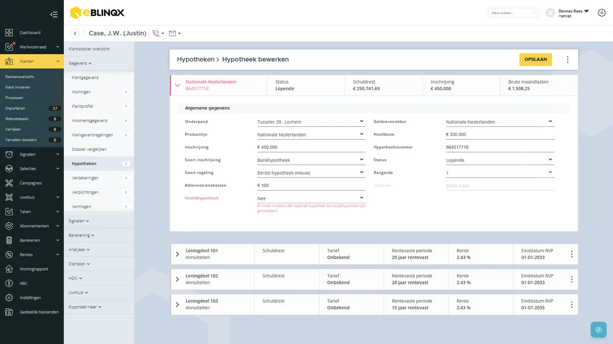
IT-23536: Validatieregel: Altijd één hoofdhypotheek per klant
Het systeem controleert nu strikt dat er altijd exact één hypotheek met de status ‘Hoofdhypotheek’ aanwezig is binnen het dossier van een klant. Het is niet meer mogelijk dat geen enkele hypotheek de status ‘Hoofdhypotheek’ heeft. Bij het wijzigen of verwijderen van een hoofdhypotheek controleert het systeem of er een nieuwe hoofdhypotheek wordt toegewezen. Foutmelding als er geen of meerdere hypotheken met de status ‘Hoofdhypotheek’ bestaan. De voordelen hiervan zijn: Consistente hypotheekdossiers zonder ontbrekende of dubbele hoofdhypotheken, voorkomt fouten bij hypotheekaanvragen en berekeningen en een duidelijker en strakker proces voor adviseurs. Deze validatieregel zorgt voor een beter gestructureerde en foutloze verwerking van hypotheken.
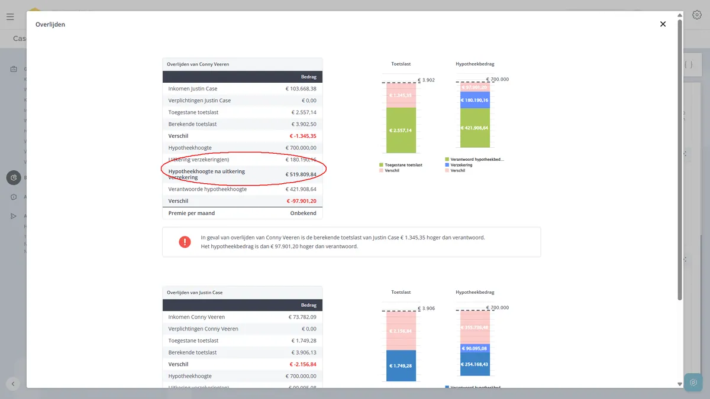
IT-24213: Correctie tekst weergave bij overlijden op scherm en in adviesrapport
De tekst op het beeldscherm en in het adviesrapport bij overlijden is aangepast om correct weer te geven of er daadwerkelijk een financieel tekort is. De berekening houdt nu rekening met bestaande verzekeringen en toont alleen een tekort als dat daadwerkelijk het geval is. Het rode waarschuwingsicoon wordt alleen getoond wanneer er daadwerkelijk een financieel tekort is. De voordelen hiervan zijn: Nauwkeurigere en heldere communicatie richting klanten, voorkomt onnodige zorgen bij goed geregelde financiële situaties. en geeft een betere weergave van de werkelijke financiële situatie bij overlijden.
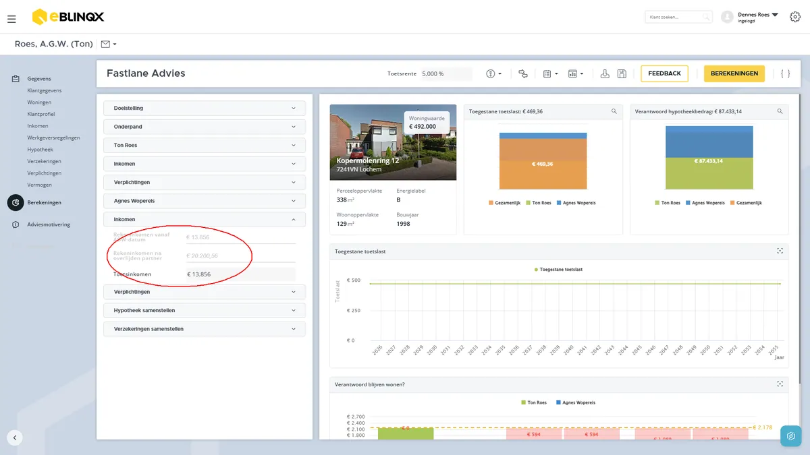
IT-19128: Automatische overgang naar AOW-alleenstaande bij overlijden partner
Wanneer zowel de aanvrager als mede-aanvrager de AOW-gerechtigde leeftijd hebben bereikt en één van hen overlijdt, houdt eBlinqx Hypotheekadvies voortaan automatisch rekening met de AOW-alleenstaande in plaats van de gehuwden-AOW. Deze wijziging zorgt voor een correcte en betrouwbare inkomensinschatting in deze scenario’s.
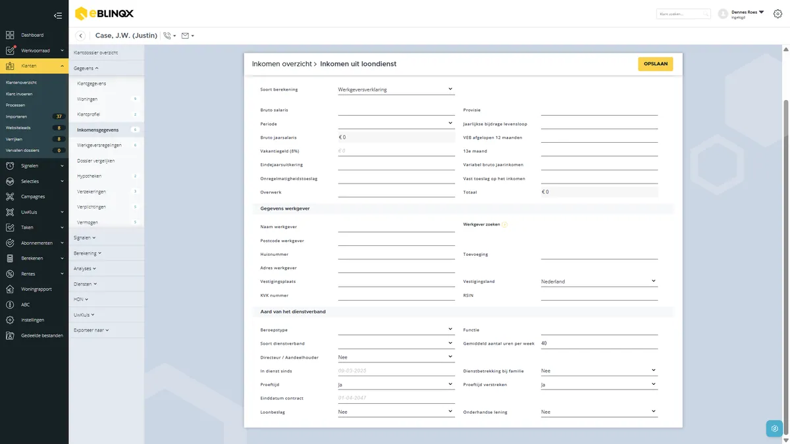
IT-24358: Prefill functionaliteit toegevoegd bij ‘Inkomen uit loondienst’
Bij het hoofdstuk ‘Inkomen’ in de rubriek ‘Inkomen uit loondienst’ worden nu meerdere velden automatisch ingevuld om het invoerproces te versnellen en te verbeteren. Prefill wijzigingen:
- Soort berekening wordt standaard ingesteld op ‘Werkgeversverklaring’.
- Aard van het dienstverband:
- Gemiddeld aantal uren per week: 40
- Directeur/Aandeelhouder: Nee
- Dienstbetrekking bij familie: Nee
- Proeftijd: Ja
- Proeftijd verstreken: Ja
- Loonbeslag: Nee
- Onderhandse lening: Nee
De voordelen hiervan zijn: Snellere invoer door automatisch ingevulde velden. Minder kans op fouten in de gegevensverwerking. Efficiënter en gestroomlijnder proces voor adviseurs. Deze wijziging zorgt voor een nauwkeuriger en gebruiksvriendelijker registratie van inkomensgegevens.
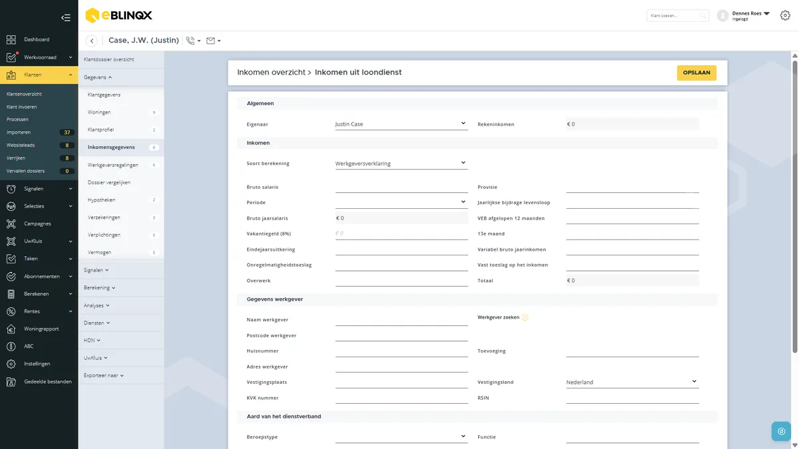
IT-24357: Aanpassing volgorde ‘Soort berekening’ bij inkomensformulier
De indeling van het inkomensformulier is aangepast om de invoerlogica te verbeteren. Het soort berekening / soort inkomen binnen de rubriek ‘Inkomen uit loondienst’ is verplaatst, waardoor de volgorde nu logischer aansluit op het invulproces. De nieuwe volgorde is:
1️⃣ Algemeen
2️⃣ Inkomen (nu eerder in het formulier)
3️⃣ Gegevens werkgever
4️⃣ Aard van het dienstverband
🔹 Deze wijziging geldt ook voor de inkomenssoort ‘Nieuw inkomen uit eigen onderneming’.
Voordelen:
✔ Logischer en efficiënter invulproces.
✔ Snellere invoer van inkomensgegevens.
✔ Consistente structuur voor verschillende inkomenssoorten.
Deze aanpassing zorgt voor een verbeterde gebruikservaring bij het invoeren van inkomensgegevens.
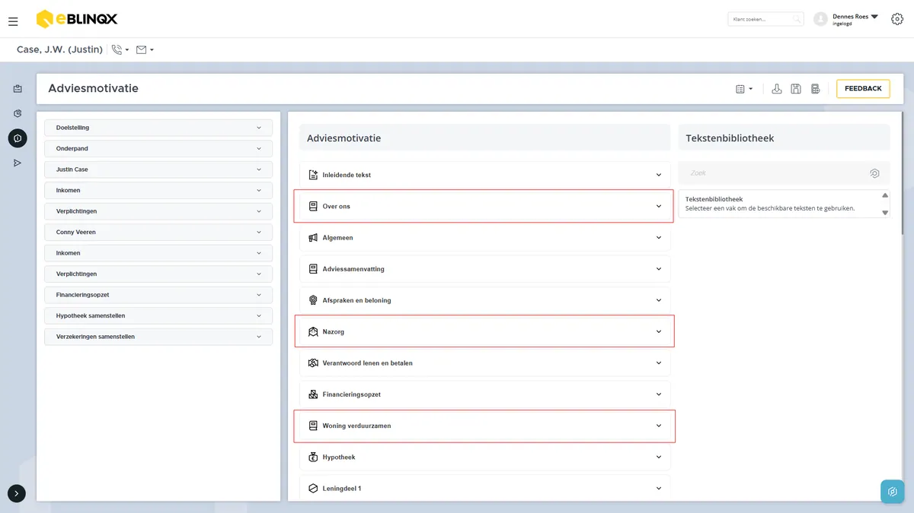
IT-24128: Nieuwe rubrieken in het adviesrapport
We hebben drie nieuwe hoofdstukken toegevoegd aan ons adviesrapport: Verduurzamen, Over ons en Nazorg. Voor deze onderdelen kan het advies nu worden gemotiveerd en aangevuld met teksten uit de tekstenbibliotheek. Deze wijziging zorgt voor een nog vollediger en professioneler adviesrapport.
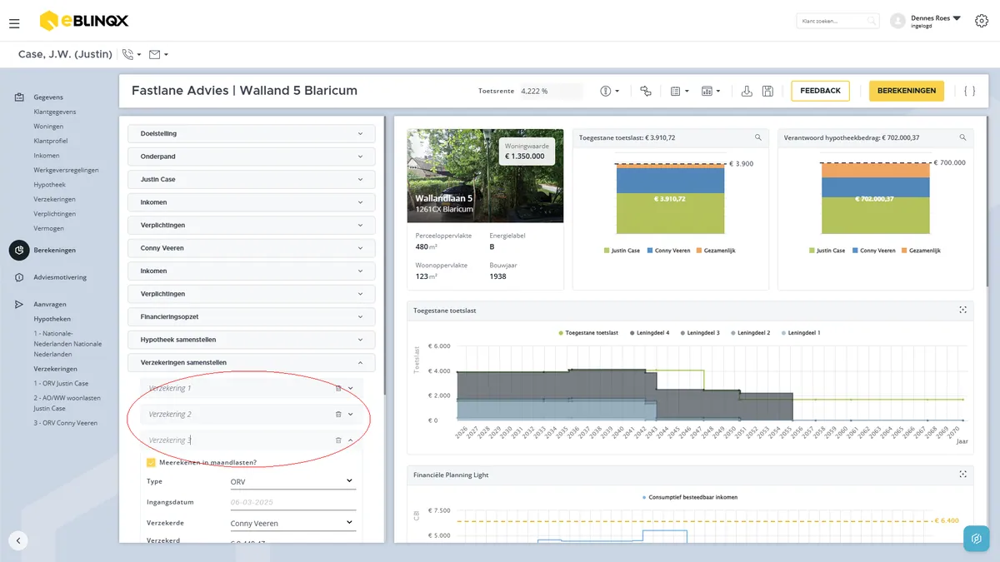
IT-23598: Verzekeringen ingeklapt presenteren voor beter overzicht
Vanaf nu kunnen de verzekeringen worden ingeklapt, net zoals bij de leningdelen binnen de hypotheek. De voordelen hiervan zijn: Overzichtelijker scherm; Minder visuele drukte bij het openen van verzekeringen. Snellere navigatiel Alleen relevante verzekeringen uitklappen wanneer nodig. Consistente gebruikerservaring; Sluit aan bij de werking van leningdelen binnen de hypotheek. Deze wijziging zorgt voor een efficiëntere en gebruiksvriendelijkere weergave van verzekeringen.
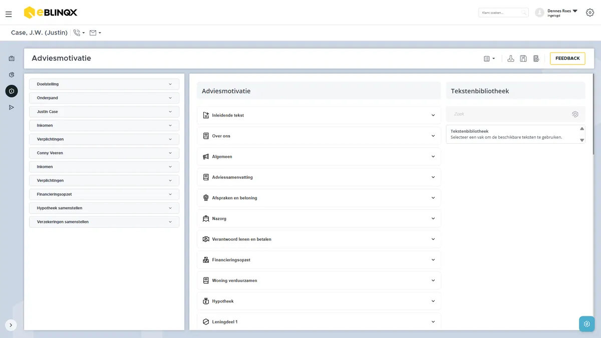
IT-24129: Adviesmotivering: Hoofdstukken standaard ingeklapt voor betere gebruikerservaring
De weergave van de Adviesmotivering is verbeterd door hoofdstukken standaard ingeklapt weer te geven, voorzien van een consistent icoon zoals in Klantprofiel read-only. Wijzigingen:
- Alle hoofdstukken in Adviesmotivering worden standaard ingeklapt.
- Duidelijke headers met een grijze balk en een herkenbaar icoon.
- Verbeterde interactie:
- Klik op een hoofdstuk om het uit te klappen.
- Bij het uitklappen wordt automatisch de bijbehorende tekst uit de tekstenbibliotheek geladen.
- Adviseurs hoeven niet meer handmatig in het motivatievak te klikken.
- Gebruiksvriendelijke animatie en visuele feedback bij openen van een hoofdstuk.
Voordelen:
✔ Overzichtelijker scherm – Minder visuele drukte bij openen van Adviesmotivering.
✔ Efficiënter werken – Adviseurs hoeven teksten niet meer handmatig te laden.
✔ Consistente gebruikerservaring – Sluit beter aan op de interface van Klantprofiel read-only.
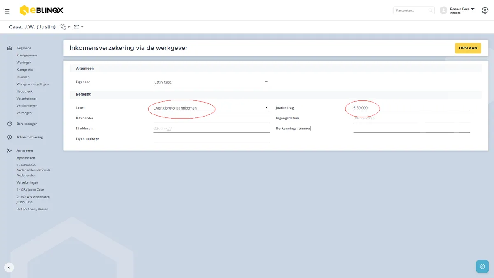
IT-22490: Overig bruto jaarinkomen in te voeren bij Inkomensverzekering via werkgever
Binnen de Inkomensverzekering via de werkgever kan nu een bedrag worden ingevoerd bij Soort regeling → Overig bruto jaarinkomen. De voordelen hiervan zijn: Completere registratie van inkomensvoorzieningen via de werkgever. Nauwkeurigere berekeningen bij inkomensverzekeringen. Meer flexibiliteit in het vastleggen van aanvullende inkomensregelingen. Deze wijziging zorgt ervoor dat alle relevante inkomensvoorzieningen correct kunnen worden ingevoerd en meegenomen in de berekeningen.